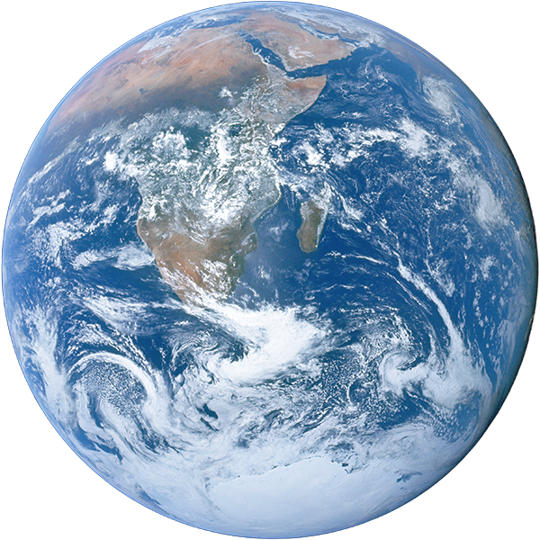

TERRA
A Terra é o planeta em que vivemos. É o único conhecido por abrigar vida. Também chamado de planeta azul, devido a maior parte de sua superfície (70%) ser coberta por água, é o terceiro planeta a partir do Sol no Sistema Solar.